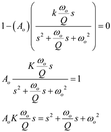
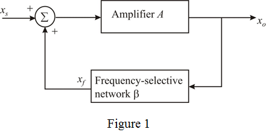
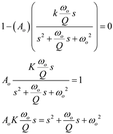

(a)
Write the condition for oscillations.
Substitute  for
for  and for.
and for.

Substitute .

…… (1)
Draw the basic structure of a sinusoidal oscillator.

The expression for the gain of the amplifier is,
The gain expression for the second-order bandpass filter is,
(a)
Write the condition for oscillations.
Substitute for and for.

Substitute .
…… (1)
Equate the imaginary part of equation (1) to zero.
Thus, the condition for sustained oscillation is.
The simplified expression for equation (1) is,
Thus, the frequency of oscillation is.
is.
The expression for the loop gain is,

Substitute  .
.
Determine the phase of the loop gain .
Differentiate with respect to .
.
Find the expression for at .
Thus, the expression of  at is.
at is.
(c)
The expression for the frequency of oscillation is,
Thus, the expression for the per unit change in frequency of oscillation is.